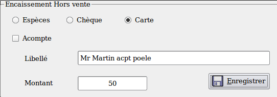

~ Laurux.Pos ~

~ Laurux.Pos ~ |
|
|
|
Gestion des acomptes
1- Saisie des acomptes.
Pour saisir un acompte il faut faire CTRL+F3 lorsque le curseur se trouve dans la zone "Article".

On saisit le mode de règlement puis le commentaire souhaité et le montant de l'acompte et on valide.
La validation de la saisie va générer une impression
sur le ticket (a remettre au client) et la mise à jour de la table des
acomptes.
2- Utilisation des acomptes.
Lorsque le client va revenir pour prendre sa marchandise, il faudra retirer l'acompte du montant du ticket.
On va saisir le ticket du client puis
faire F7 pour saisir le réglement puis on va cliquer sur le bouton "Acompte" .
Une
fenêtre va s'ouvrir avec la totalité des acomptes mémorisés. On
sélectionne la ligne souhaitée par un clic ce qui va mettre à jour la
zone du montant de l'acompte qu'il suffira de valider.
A l'impression du ticket, l'acompte sera supprimé de la table.
----------------------------------------------------------------------------------------------------------------------